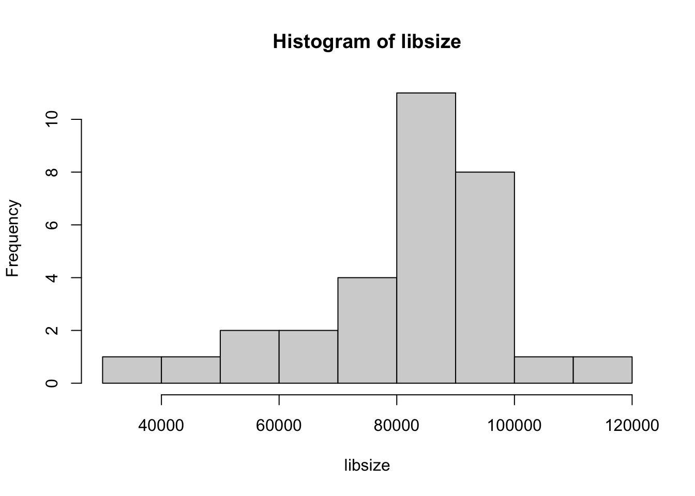

Why should the data be preprocessed?
For amplicon sequencing type of data, like 16S, there is in general three inherent characteristics of the count table:
Outlying samples or samples with low quality (few sequences) should be removed up-front. The function prune_samples() in phyloseq can be used for this.
Criterion for removing variables are usually the frequency of samples with non-zero counts. The function filter_taxa() in phyloseq can be used for this.
Due to inherent constitutionality within each samples, normalization or rarefaction is needed either as preprocessing or as a part of the statistical modeling.
TSS where each count within a sample is divided by the total number
of counts within the sample, is the most intuitive and straight forward
method for handling differences in library size. The function
transform_sample_counts() in phyloseq can be used for this.
However, due to the library size being very much dependent on often very
few OTUs carrying most of the reads within a sample, the uncertainty on
these few OTUs consequently inflates the entire count table. One
alternative is the Cumulative Sum Scaling (CSS) which
normalizes by the sum of the lowest not so common OTUs within
each sample. Statistically, this sum is less uncertain, and hence less
inflation of uncertainty on the entire dataset. The function
phyloseq_transform_css(), an add on to phyloseq from the metagMisc package can
be used for this.
Rarefaction is a sub sampling technique where an equal amount of reads is stochastically drawn from the total amount of sequences for each sample. Consequently the data becomes exact compositional, however, the sensitivity for discovery of rare / low count species is going down. The function rarefy_even_depth() in phyloseq can be used for this.
For some upstream statistical models the data might be better served by a monotone, but non-linear, transformation. The inherent distribution, where a few OTUs carry most of the reads, means that e.g. some beta diversity metrics will naturally strongly depend on those OTUs, with the consequence that the not-so-common OTUs do not contributes to variation. One way to counteract this, is to make the larger smaller while making the smaller larger…. the sqrt() and log() transformation does exactly that. However, log(0) is -infinity and hence destroys everything. When using the log() transform a fix needs to be incorporated for instance log(x + pc) where pc is a pseudo count. The function transform_sample_counts() in phyloseq can be used for this.
OTU level resolution is sometimes not needed due to the biological questions manifesting at a higher taxonomic level. In such cases, all the counts within a taxonomic similar group of OTUs can be merged leading to fever features and less sparsity. The function tax_glom() in phyloseq can be used for this.
Xia, Yinglin, Jun Sun, and Ding-Geng Chen. Statistical analysis of microbiome data with R. Springer, 2018.
Draw histogram of library size
library(phyloseq)
library(tidyverse)
load('./data/Mice_csec.RData')
libsize <- phyloseq::sample_sums(phyX)
hist(libsize)
# or the tidyverse way
## phyX %>% sample_sums() %>% hist()Play around with different preprocessing techniques and collect the beta-diversity measure of the different versions. Correlate those to see what happens. Inspiration for code below. Try to change the beta-diversity measure - for instance to (w)unifrac - and see what happens.
library(phyloseq)
load('./data/Mice_csec.RData')
# TSS normalize
phyXpp1 <- transform_sample_counts(phyX,function(x) x / sum(x))
# CSS normalization
phyXpp2 <- phyloseq_transform_css(phyX)
# rarefy
phyXpp3 <- rarefy_even_depth(phyX)
# filter of rare OTU's
fr <- 0.5
n <- 31 # number of samples
phyXpp4 <- filter_taxa(phyX, function(x) sum(x > 0)>n*fr, TRUE)
phyXpp5 <- tax_glom(phyX, 'Rank6')
mth <- 'wunifrac'
dd1 <- phyloseq::distance(phyXpp1,mth)
dd2 <- phyloseq::distance(phyXpp2,mth)
dd4 <- phyloseq::distance(phyXpp3,mth)
dd3 <- phyloseq::distance(phyXpp4,mth)
dd5 <- phyloseq::distance(phyXpp5,mth)
dist_df <- data.frame(TSS = as.vector(dd1),
CSS = as.vector(dd2),
rare = as.vector(dd3),
filt = as.vector(dd4),
rank5 = as.vector(dd5))
cor(dist_df)